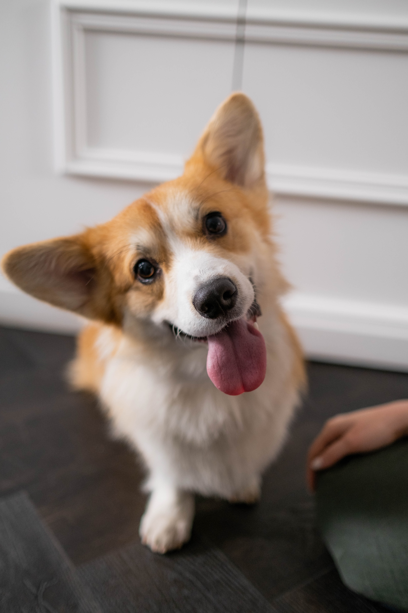

Weigh Up to 30 lbs
Bigger than the other smol dogs, corgies are on the upper end of small dog sizing.
Intelligent
Welch corgies are in the top percentile of iq, easy to train yet very determined.

Chatty
Corgies love to bark, growl, and yip. They'll let you know when something's up.